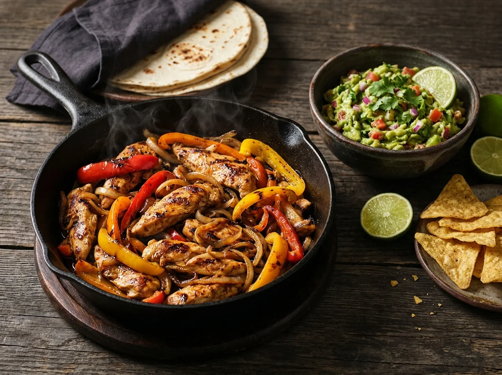

Fajita & Guacamole
The best combination of Fajita and Guacamole for a fun filled Mexican night.
Instructions
Tap a step when done1. Mix all the fajita spices together
2. Cut chicken breasts into strips and season chicken with fajita spices
3. Heat up a cast iron skillet until warm.
4. Add some canola oil or neutral oil to the cast iron when hot
5. Add chicken to cast iron and leave until cooked all the way through
6. Once chicken is complete, remove from pan and add bell peppers first and season with salt & pepper
7. Add onions when bell peppers are halfway cooked and leave in cast iron with lid for 5-10min
8. Once vegtables are soft add the chicken and mix together
9. Serve in tortilla with your favorite toppings.
1. Grab a large bowl and add avocados
2. Dice tomatos and onion and add to bowl
3. Add minced garlic & cilantro
4. Squeeze lime into bowl
5. Add salt to taste
6. Feel free to add more lime juice however more lime will liquify Guacamole
7. If too salty or lime, add a pinch of sugar